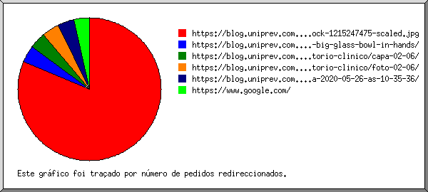
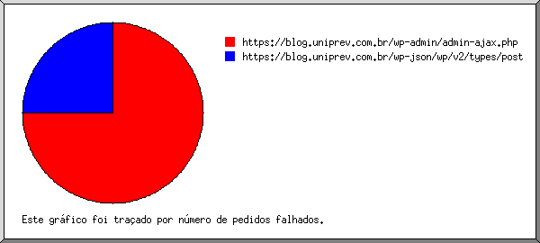
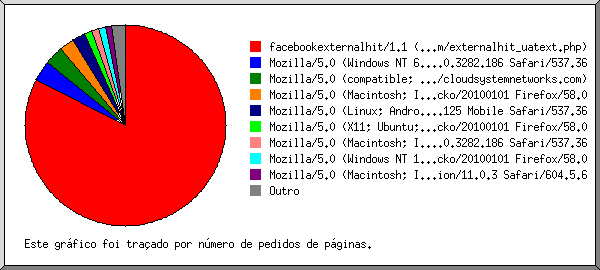
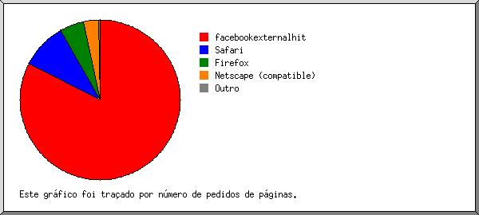

Estatísticas do Servidor Web de blog.uniprev.com.br
Estatísticas do Servidor Web de blog.uniprev.com.br
Começo do programa em Sex-31-Jul-2020 22:26.
Análise de pedidos desde Seg-13-Abr-2020 08:24 até Sex-31-Jul-2020 10:30 (109,09 dias).
Estatísticas do Servidor Web de blog.uniprev.com.brComeço do programa em Sex-31-Jul-2020 22:26.
Análise de pedidos desde Seg-13-Abr-2020 08:24 até Sex-31-Jul-2020 10:30 (109,09 dias).
(Ir a: Início | Sumário Geral | Relatório Mensal | Resumo Diário | Resumo Horário | Relatório de Domínios | Relatório de organizações | Relatório de referência redireccionada | Relatório de referência falhada | Relatório do sítio de referência | Relatório de Leitores | Resumo de Leitores | Relatório de Sistemas Operativos | Relatório de Códigos de Estado | Relatório de Tamanho de Ficheiro | Relatório de Tipos de Ficheiro | Relatório de Directorias | Relatório de Pedidos)
Os valores entre parêntesis referem-se aos 7 dias até 31-Jul-2020 22:26.
Pedidos atendidos: 7 800 (10)
Número médio de pedidos atendidos por dia: 71 (1)
Pedidos de páginas atendidos: 4 263 (0)
Número médio de pedidos de páginas atendidos por dia: 39
Pedidos não atendidos: 225 (1)
Pedidos redirigidos: 565 (0)
Ficheiros diferentes solicitados: 113 (124)
Servidores diferentes atendidos: 145 (160)
Tráfego total: 197,39 megabytes (445 bytes)
Tráfego médio transferido por dia: 1,81 megabytes (63 bytes)
(Ir a: Início | Sumário Geral | Relatório Mensal | Resumo Diário | Resumo Horário | Relatório de Domínios | Relatório de organizações | Relatório de referência redireccionada | Relatório de referência falhada | Relatório do sítio de referência | Relatório de Leitores | Resumo de Leitores | Relatório de Sistemas Operativos | Relatório de Códigos de Estado | Relatório de Tamanho de Ficheiro | Relatório de Tipos de Ficheiro | Relatório de Directorias | Relatório de Pedidos)
Cada unidade ( ) representa 80 pedidos de páginas ou fracção.
) representa 80 pedidos de páginas ou fracção.
| mês | N.ped | Pgs. | |
|---|---|---|---|
| Abr 2020 | 2218 | 1402 |   |
| Mai 2020 | 4985 | 2549 |  |
| Jun 2020 | 558 | 302 |  |
| Jul 2020 | 39 | 10 | |
Mês mais movimentado: Mai 2020 (2 549 pedidos de páginas).
(Ir a: Início | Sumário Geral | Relatório Mensal | Resumo Diário | Resumo Horário | Relatório de Domínios | Relatório de organizações | Relatório de referência redireccionada | Relatório de referência falhada | Relatório do sítio de referência | Relatório de Leitores | Resumo de Leitores | Relatório de Sistemas Operativos | Relatório de Códigos de Estado | Relatório de Tamanho de Ficheiro | Relatório de Tipos de Ficheiro | Relatório de Directorias | Relatório de Pedidos)
Cada unidade () representa 25 pedidos de páginas ou fracção.
| dia | N.ped | Pgs. | |
|---|---|---|---|
| Dom | 704 | 355 |  |
| Seg | 1044 | 315 | |
| Ter | 1518 | 987 | |
| Qua | 1681 | 884 | |
| Qui | 1171 | 723 | |
| Sex | 1024 | 621 | |
| Sab | 658 | 378 | |
(Ir a: Início | Sumário Geral | Relatório Mensal | Resumo Diário | Resumo Horário | Relatório de Domínios | Relatório de organizações | Relatório de referência redireccionada | Relatório de referência falhada | Relatório do sítio de referência | Relatório de Leitores | Resumo de Leitores | Relatório de Sistemas Operativos | Relatório de Códigos de Estado | Relatório de Tamanho de Ficheiro | Relatório de Tipos de Ficheiro | Relatório de Directorias | Relatório de Pedidos)
Cada unidade () representa 10 pedidos de páginas ou fracção.
| h | N.ped | Pgs. | |
|---|---|---|---|
| 00 | 178 | 87 | |
| 01 | 573 | 343 | |
| 02 | 102 | 60 | |
| 03 | 7 | 0 | |
| 04 | 183 | 103 | |
| 05 | 170 | 72 | |
| 06 | 188 | 52 | |
| 07 | 191 | 126 | |
| 08 | 162 | 144 | |
| 09 | 622 | 414 | |
| 10 | 191 | 100 | |
| 11 | 312 | 239 | |
| 12 | 462 | 263 | |
| 13 | 346 | 205 | |
| 14 | 656 | 279 | |
| 15 | 480 | 243 | |
| 16 | 141 | 108 | |
| 17 | 280 | 113 | |
| 18 | 587 | 229 | |
| 19 | 483 | 231 | |
| 20 | 246 | 108 | |
| 21 | 554 | 333 | |
| 22 | 205 | 132 | |
| 23 | 481 | 279 | |
(Ir a: Início | Sumário Geral | Relatório Mensal | Resumo Diário | Resumo Horário | Relatório de Domínios | Relatório de organizações | Relatório de referência redireccionada | Relatório de referência falhada | Relatório do sítio de referência | Relatório de Leitores | Resumo de Leitores | Relatório de Sistemas Operativos | Relatório de Códigos de Estado | Relatório de Tamanho de Ficheiro | Relatório de Tipos de Ficheiro | Relatório de Directorias | Relatório de Pedidos)
Mostrando os domínios, ordenados por quantidade de tráfego.
| N.ped | %bytes | domínio |
|---|---|---|
| 7800 | 100% | [endereço numérico não traduzido] |
(Ir a: Início | Sumário Geral | Relatório Mensal | Resumo Diário | Resumo Horário | Relatório de Domínios | Relatório de organizações | Relatório de referência redireccionada | Relatório de referência falhada | Relatório do sítio de referência | Relatório de Leitores | Resumo de Leitores | Relatório de Sistemas Operativos | Relatório de Códigos de Estado | Relatório de Tamanho de Ficheiro | Relatório de Tipos de Ficheiro | Relatório de Directorias | Relatório de Pedidos)

Mostrando as 20 primeiras organizações por número de pedidos, ordenadas por número de pedidos.
| N.ped | %bytes | organização |
|---|---|---|
| 2749 | 11,42% | 173.252 |
| 2670 | 19,78% | 52 |
| 647 | 4,00% | 69 |
| 286 | 6,12% | 93 |
| 227 | 0,93% | 31 |
| 215 | 0,01% | 66.249 |
| 128 | 3,23% | 209.17 |
| 103 | 4,96% | 179.178 |
| 96 | 8,78% | 189.68 |
| 92 | 0,42% | 66.220 |
| 69 | 9,44% | 177.66 |
| 68 | 4,68% | 201.77 |
| 64 | 4,40% | 187.18 |
| 60 | 4,13% | 177.134 |
| 52 | 3,58% | 170.79 |
| 49 | 0,03% | 181.215 |
| 48 | 1,03% | 163.172 |
| 34 | 4,65% | 177.59 |
| 31 | 0,15% | 45 |
| 30 | 0,17% | 51 |
| 82 | 8,11% | [não listadas: 13 organizações] |
(Ir a: Início | Sumário Geral | Relatório Mensal | Resumo Diário | Resumo Horário | Relatório de Domínios | Relatório de organizações | Relatório de referência redireccionada | Relatório de referência falhada | Relatório do sítio de referência | Relatório de Leitores | Resumo de Leitores | Relatório de Sistemas Operativos | Relatório de Códigos de Estado | Relatório de Tamanho de Ficheiro | Relatório de Tipos de Ficheiro | Relatório de Directorias | Relatório de Pedidos)

Mostrando os URLs de referência, ordenados por número de pedidos redireccionados.
(Ir a: Início | Sumário Geral | Relatório Mensal | Resumo Diário | Resumo Horário | Relatório de Domínios | Relatório de organizações | Relatório de referência redireccionada | Relatório de referência falhada | Relatório do sítio de referência | Relatório de Leitores | Resumo de Leitores | Relatório de Sistemas Operativos | Relatório de Códigos de Estado | Relatório de Tamanho de Ficheiro | Relatório de Tipos de Ficheiro | Relatório de Directorias | Relatório de Pedidos)

Mostrando os URLs de referência, ordenados por número de pedidos falhados.
| N.ped | URL |
|---|---|
| 3 | https://blog.uniprev.com.br/wp-admin/admin-ajax.php |
| 1 | https://blog.uniprev.com.br/wp-json/wp/v2/types/post |
(Ir a: Início | Sumário Geral | Relatório Mensal | Resumo Diário | Resumo Horário | Relatório de Domínios | Relatório de organizações | Relatório de referência redireccionada | Relatório de referência falhada | Relatório do sítio de referência | Relatório de Leitores | Resumo de Leitores | Relatório de Sistemas Operativos | Relatório de Códigos de Estado | Relatório de Tamanho de Ficheiro | Relatório de Tipos de Ficheiro | Relatório de Directorias | Relatório de Pedidos)

Mostrando os sítios de referência, ordenados por número de pedidos.
| N.ped | sítio |
|---|---|
| 2859 | https://blog.uniprev.com.br/ |
| 350 | https://www.google.com/ |
| 34 | https://www.google.com.br/ |
(Ir a: Início | Sumário Geral | Relatório Mensal | Resumo Diário | Resumo Horário | Relatório de Domínios | Relatório de organizações | Relatório de referência redireccionada | Relatório de referência falhada | Relatório do sítio de referência | Relatório de Leitores | Resumo de Leitores | Relatório de Sistemas Operativos | Relatório de Códigos de Estado | Relatório de Tamanho de Ficheiro | Relatório de Tipos de Ficheiro | Relatório de Directorias | Relatório de Pedidos)

Mostrando os leitores com pelo menos 1 pedido de uma página, ordenados por número de pedidos de páginas.
| N.ped | Pgs. | Leitor |
|---|---|---|
| 3522 | 3522 | facebookexternalhit/1.1 (+http://www.facebook.com/externalhit_uatext.php) |
| 142 | 142 | Mozilla/5.0 (Windows NT 6.1; Win64; x64) AppleWebKit/537.36 (KHTML, like Gecko) Chrome/64.0.3282.186 Safari/537.36 |
| 128 | 128 | Mozilla/5.0 (compatible; Nimbostratus-Bot/v1.3.2; http://cloudsystemnetworks.com) |
| 99 | 99 | Mozilla/5.0 (Macintosh; Intel Mac OS X 10.13; rv:58.0) Gecko/20100101 Firefox/58.0 |
| 96 | 96 | Mozilla/5.0 (Linux; Android 7.0; SM-G930V Build/NRD90M) AppleWebKit/537.36 (KHTML, like Gecko) Chrome/59.0.3071.125 Mobile Safari/537.36 |
| 50 | 50 | Mozilla/5.0 (X11; Ubuntu; Linux x86_64; rv:58.0) Gecko/20100101 Firefox/58.0 |
| 49 | 49 | Mozilla/5.0 (Macintosh; Intel Mac OS X 10_12_6) AppleWebKit/537.36 (KHTML, like Gecko) Chrome/64.0.3282.186 Safari/537.36 |
| 46 | 46 | Mozilla/5.0 (Windows NT 10.0; Win64; x64; rv:58.0) Gecko/20100101 Firefox/58.0 |
| 46 | 46 | Mozilla/5.0 (Macintosh; Intel Mac OS X 10_12_6) AppleWebKit/604.5.6 (KHTML, like Gecko) Version/11.0.3 Safari/604.5.6 |
| 29 | 29 | Mozilla/5.0 (X11; Linux x86_64) AppleWebKit/537.36 (KHTML, like Gecko) Chrome/78.0.3904.108 Safari/537.36 |
| 18 | 18 | Mozilla/5.0 (Windows NT 6.1; WOW64) AppleWebKit/537.36 (KHTML, like Gecko) Chrome/47.0.2526.111 Safari/537.36 |
| 14 | 14 | Mozilla/5.0 (Macintosh; Intel Mac OS X 10.11; rv:47.0) Gecko/20100101 Firefox/47.0 |
| 13 | 13 | Mozilla/5.0 (X11; Linux x86_64) AppleWebKit/537.36 (KHTML, like Gecko) Chrome/74.0.3729.169 Safari/537.36 |
| 9 | 9 | Mozilla/5.0 zgrab/0.x |
| 1 | 1 | Mozilla/5.0 (Linux; U; Android 4.4.2; en-us; SCH-I535 Build/KOT49H) AppleWebKit/534.30 (KHTML, like Gecko) Version/4.0 Mobile Safari/534.30 |
| 1 | 1 | Mozilla/5.0 (Windows NT 6.1; rv:51.0) Gecko/20100101 Firefox/51.0 |
| 3537 | 0 | [não listados: 13 Leitores] |
(Ir a: Início | Sumário Geral | Relatório Mensal | Resumo Diário | Resumo Horário | Relatório de Domínios | Relatório de organizações | Relatório de referência redireccionada | Relatório de referência falhada | Relatório do sítio de referência | Relatório de Leitores | Resumo de Leitores | Relatório de Sistemas Operativos | Relatório de Códigos de Estado | Relatório de Tamanho de Ficheiro | Relatório de Tipos de Ficheiro | Relatório de Directorias | Relatório de Pedidos)

Mostrando os leitores com pelo menos 1 pedido de uma página, ordenados por número de pedidos de páginas.
| no. | N.ped | Pgs. | Leitor |
|---|---|---|---|
| 1 | 3522 | 3522 | facebookexternalhit |
| 3522 | 3522 | facebookexternalhit/1 | |
| 2 | 997 | 394 | Safari |
| 950 | 347 | Safari/537 | |
| 46 | 46 | Safari/604 | |
| 1 | 1 | Safari/534 | |
| 3 | 210 | 210 | Firefox |
| 195 | 195 | Firefox/58 | |
| 14 | 14 | Firefox/47 | |
| 1 | 1 | Firefox/51 | |
| 4 | 343 | 128 | Netscape (compatible) |
| 5 | 58 | 9 | Mozilla |
| 2670 | 0 | [não listados: 2 Leitores] |
(Ir a: Início | Sumário Geral | Relatório Mensal | Resumo Diário | Resumo Horário | Relatório de Domínios | Relatório de organizações | Relatório de referência redireccionada | Relatório de referência falhada | Relatório do sítio de referência | Relatório de Leitores | Resumo de Leitores | Relatório de Sistemas Operativos | Relatório de Códigos de Estado | Relatório de Tamanho de Ficheiro | Relatório de Tipos de Ficheiro | Relatório de Directorias | Relatório de Pedidos)

Mostrando os Sistemas Operativos, ordenados por número de pedidos de páginas.
| no. | N.ped | Pgs. | Sistema Operativo |
|---|---|---|---|
| 1 | 6544 | 3659 | Sistema Operativo desconhecido |
| 2 | 208 | 208 | Macintosh |
| 3 | 859 | 207 | Windows |
| 210 | 161 | Windows desconhecido | |
| 649 | 46 | Windows NT | |
| 4 | 189 | 189 | Unix |
| 189 | 189 | Linux |
(Ir a: Início | Sumário Geral | Relatório Mensal | Resumo Diário | Resumo Horário | Relatório de Domínios | Relatório de organizações | Relatório de referência redireccionada | Relatório de referência falhada | Relatório do sítio de referência | Relatório de Leitores | Resumo de Leitores | Relatório de Sistemas Operativos | Relatório de Códigos de Estado | Relatório de Tamanho de Ficheiro | Relatório de Tipos de Ficheiro | Relatório de Directorias | Relatório de Pedidos)

Mostrando os códigos de estado, por ordem numérica.
| N.ped | cod. estado |
|---|---|
| 7800 | 200 OK |
| 327 | 301 Document moved permanently |
| 238 | 302 Document found elsewhere |
| 3 | 400 Bad request |
| 1 | 401 Authentication required |
| 221 | 404 Document not found |
(Ir a: Início | Sumário Geral | Relatório Mensal | Resumo Diário | Resumo Horário | Relatório de Domínios | Relatório de organizações | Relatório de referência redireccionada | Relatório de referência falhada | Relatório do sítio de referência | Relatório de Leitores | Resumo de Leitores | Relatório de Sistemas Operativos | Relatório de Códigos de Estado | Relatório de Tamanho de Ficheiro | Relatório de Tipos de Ficheiro | Relatório de Directorias | Relatório de Pedidos)

| tamanho | N.ped | %bytes |
|---|---|---|
| 0 | 0 | |
| 1B- 10B | 0 | |
| 11B- 100B | 2840 | 0,03% |
| 101B- 1kB | 107 | 0,02% |
| 1kB- 10kB | 3864 | 15,37% |
| 10kB-100kB | 573 | 12,86% |
| 100kB- 1MB | 398 | 53,54% |
| 1MB- 10MB | 18 | 18,17% |
(Ir a: Início | Sumário Geral | Relatório Mensal | Resumo Diário | Resumo Horário | Relatório de Domínios | Relatório de organizações | Relatório de referência redireccionada | Relatório de referência falhada | Relatório do sítio de referência | Relatório de Leitores | Resumo de Leitores | Relatório de Sistemas Operativos | Relatório de Códigos de Estado | Relatório de Tamanho de Ficheiro | Relatório de Tipos de Ficheiro | Relatório de Directorias | Relatório de Pedidos)

Mostrando as extensões com pelo menos 0,1% do tráfego, ordenadas por quantidade de tráfego.
| N.ped | %bytes | extensão |
|---|---|---|
| 441 | 61,70% | .jpg [JPEG graphics] |
| 4263 | 27,92% | [directorias] |
| 198 | 10,32% | .png [PNG graphics] |
| 2898 | 0,06% | [não listadas: 2 extensões] |
(Ir a: Início | Sumário Geral | Relatório Mensal | Resumo Diário | Resumo Horário | Relatório de Domínios | Relatório de organizações | Relatório de referência redireccionada | Relatório de referência falhada | Relatório do sítio de referência | Relatório de Leitores | Resumo de Leitores | Relatório de Sistemas Operativos | Relatório de Códigos de Estado | Relatório de Tamanho de Ficheiro | Relatório de Tipos de Ficheiro | Relatório de Directorias | Relatório de Pedidos)

Mostrando as directorias com pelo menos 0,01% do tráfego, ordenadas por quantidade de tráfego.
| N.ped | %bytes | directoria |
|---|---|---|
| 639 | 72,02% | /wp-content/ |
| 7068 | 27,96% | [directoria da raiz] |
| 93 | 0,03% | /wp-admin/ |
(Ir a: Início | Sumário Geral | Relatório Mensal | Resumo Diário | Resumo Horário | Relatório de Domínios | Relatório de organizações | Relatório de referência redireccionada | Relatório de referência falhada | Relatório do sítio de referência | Relatório de Leitores | Resumo de Leitores | Relatório de Sistemas Operativos | Relatório de Códigos de Estado | Relatório de Tamanho de Ficheiro | Relatório de Tipos de Ficheiro | Relatório de Directorias | Relatório de Pedidos)

Mostrando os ficheiros com pelo menos 20 pedidos, ordenados por número de pedidos.
| N.ped | %bytes | hora ant. | ficheiro |
|---|---|---|---|
| 4263 | 27,92% | 16/Jul/20 07:53 | / |
| 45 | 0,03% | 16/Jul/20 07:53 | /?173.252.87.29 |
| 2590 | 0,03% | 31/Jul/20 10:30 | /wp-cron.php |
| 48 | 13/Abr/20 21:40 | /wp-cron.php?doing_wp_cron=1586814047.1323471069335937500000 | |
| 48 | 14/Abr/20 01:24 | /wp-cron.php?doing_wp_cron=1586838284.0082828998565673828125 | |
| 48 | 14/Abr/20 01:24 | /wp-cron.php?doing_wp_cron=1586838284.0082709789276123046875 | |
| 47 | 26/Abr/20 18:40 | /wp-cron.php?doing_wp_cron=1587926421.6930570602416992187500 | |
| 45 | 29/Abr/20 01:39 | /wp-cron.php?doing_wp_cron=1588124393.5647749900817871093750 | |
| 45 | 29/Abr/20 09:08 | /wp-cron.php?doing_wp_cron=1588151318.0768959522247314453125 | |
| 45 | 29/Abr/20 04:00 | /wp-cron.php?doing_wp_cron=1588132800.8766639232635498046875 | |
| 44 | 29/Abr/20 15:31 | /wp-cron.php?doing_wp_cron=1588174316.0303559303283691406250 | |
| 44 | 29/Abr/20 18:45 | /wp-cron.php?doing_wp_cron=1588185900.9396889209747314453125 | |
| 44 | 30/Abr/20 00:30 | /wp-cron.php?doing_wp_cron=1588217445.9407699108123779296875 | |
| 44 | 29/Abr/20 22:21 | /wp-cron.php?doing_wp_cron=1588198917.9601581096649169921875 | |
| 44 | 29/Abr/20 12:33 | /wp-cron.php?doing_wp_cron=1588163609.0475530624389648437500 | |
| 44 | 30/Abr/20 06:02 | /wp-cron.php?doing_wp_cron=1588226545.7131600379943847656250 | |
| 43 | 30/Abr/20 18:40 | /wp-cron.php?doing_wp_cron=1588272058.3732678890228271484375 | |
| 43 | 1/Mai/20 00:01 | /wp-cron.php?doing_wp_cron=1588291301.0296521186828613281250 | |
| 43 | 30/Abr/20 14:41 | /wp-cron.php?doing_wp_cron=1588257681.5392339229583740234375 | |
| 43 | 1/Mai/20 09:45 | /wp-cron.php?doing_wp_cron=1588326315.5151560306549072265625 | |
| 42 | 2/Mai/20 05:12 | /wp-cron.php?doing_wp_cron=1588396331.4010848999023437500000 | |
| 42 | 2/Mai/20 02:11 | /wp-cron.php?doing_wp_cron=1588385469.0560410022735595703125 | |
| 42 | 1/Mai/20 23:20 | /wp-cron.php?doing_wp_cron=1588375226.4698960781097412109375 | |
| 42 | 1/Mai/20 14:41 | /wp-cron.php?doing_wp_cron=1588344064.2687499523162841796875 | |
| 42 | 2/Mai/20 09:20 | /wp-cron.php?doing_wp_cron=1588411255.9789490699768066406250 | |
| 42 | 1/Mai/20 20:30 | /wp-cron.php?doing_wp_cron=1588365034.4813768863677978515625 | |
| 41 | 2/Mai/20 15:23 | /wp-cron.php?doing_wp_cron=1588433020.1980259418487548828125 | |
| 41 | 3/Mai/20 07:58 | /wp-cron.php?doing_wp_cron=1588492690.7769770622253417968750 | |
| 41 | 2/Mai/20 19:26 | /wp-cron.php?doing_wp_cron=1588447591.1545960903167724609375 | |
| 41 | 2/Mai/20 23:16 | /wp-cron.php?doing_wp_cron=1588461391.2798540592193603515625 | |
| 41 | 3/Mai/20 10:42 | /wp-cron.php?doing_wp_cron=1588502525.0170700550079345703125 | |
| 40 | 4/Mai/20 11:32 | /wp-cron.php?doing_wp_cron=1588591923.2867109775543212890625 | |
| 40 | 3/Mai/20 23:15 | /wp-cron.php?doing_wp_cron=1588547707.2832419872283935546875 | |
| 40 | 3/Mai/20 14:03 | /wp-cron.php?doing_wp_cron=1588514616.6000709533691406250000 | |
| 40 | 3/Mai/20 14:03 | /wp-cron.php?doing_wp_cron=1588514616.6000928878784179687500 | |
| 40 | 4/Mai/20 09:25 | /wp-cron.php?doing_wp_cron=1588584344.2676529884338378906250 | |
| 39 | 6/Mai/20 01:53 | /wp-cron.php?doing_wp_cron=1588730028.8160750865936279296875 | |
| 39 | 4/Mai/20 14:21 | /wp-cron.php?doing_wp_cron=1588602113.2124829292297363281250 | |
| 39 | 5/Mai/20 19:53 | /wp-cron.php?doing_wp_cron=1588708412.9690539836883544921875 | |
| 39 | 5/Mai/20 10:45 | /wp-cron.php?doing_wp_cron=1588675553.7303779125213623046875 | |
| 39 | 4/Mai/20 23:00 | /wp-cron.php?doing_wp_cron=1588633222.5882658958435058593750 | |
| 38 | 6/Mai/20 14:46 | /wp-cron.php?doing_wp_cron=1588776391.0086700916290283203125 | |
| 38 | 7/Mai/20 06:31 | /wp-cron.php?doing_wp_cron=1588843868.3777430057525634765625 | |
| 38 | 6/Mai/20 21:47 | /wp-cron.php?doing_wp_cron=1588812459.4626860618591308593750 | |
| 38 | 6/Mai/20 21:47 | /wp-cron.php?doing_wp_cron=1588812459.4620609283447265625000 | |
| 37 | 7/Mai/20 21:35 | /wp-cron.php?doing_wp_cron=1588887334.5785679817199707031250 | |
| 37 | 8/Mai/20 09:43 | /wp-cron.php?doing_wp_cron=1588931012.2693669795989990234375 | |
| 35 | 11/Mai/20 14:03 | /wp-cron.php?doing_wp_cron=1589205835.1937499046325683593750 | |
| 34 | 12/Mai/20 04:18 | /wp-cron.php?doing_wp_cron=1589257105.2069509029388427734375 | |
| 34 | 12/Mai/20 19:38 | /wp-cron.php?doing_wp_cron=1589312289.3880729675292968750000 | |
| 33 | 13/Mai/20 20:44 | /wp-cron.php?doing_wp_cron=1589402694.0935170650482177734375 | |
| 33 | 13/Mai/20 17:48 | /wp-cron.php?doing_wp_cron=1589392091.9655869007110595703125 | |
| 32 | 18/Mai/20 18:40 | /wp-cron.php?doing_wp_cron=1589827243.3179280757904052734375 | |
| 32 | 18/Mai/20 13:36 | /wp-cron.php?doing_wp_cron=1589808962.7592151165008544921875 | |
| 31 | 19/Mai/20 13:38 | /wp-cron.php?doing_wp_cron=1589895480.1983129978179931640625 | |
| 30 | 20/Mai/20 15:12 | /wp-cron.php?doing_wp_cron=1589987549.8405520915985107421875 | |
| 30 | 21/Mai/20 01:40 | /wp-cron.php?doing_wp_cron=1590025227.1028449535369873046875 | |
| 30 | 20/Mai/20 20:23 | /wp-cron.php?doing_wp_cron=1590006228.2232758998870849609375 | |
| 29 | 21/Mai/20 22:14 | /wp-cron.php?doing_wp_cron=1590110094.0386641025543212890625 | |
| 29 | 21/Mai/20 17:31 | /wp-cron.php?doing_wp_cron=1590082271.2442209720611572265625 | |
| 28 | 23/Mai/20 05:07 | /wp-cron.php?doing_wp_cron=1590221261.8237669467926025390625 | |
| 28 | 22/Mai/20 17:51 | /wp-cron.php?doing_wp_cron=1590169903.5893990993499755859375 | |
| 27 | 24/Mai/20 12:25 | /wp-cron.php?doing_wp_cron=1590323143.3766438961029052734375 | |
| 26 | 25/Mai/20 12:32 | /wp-cron.php?doing_wp_cron=1590420734.2120349407196044921875 | |
| 25 | 27/Mai/20 05:57 | /wp-cron.php?doing_wp_cron=1590559073.2379059791564941406250 | |
| 23 | 29/Mai/20 14:27 | /wp-cron.php?doing_wp_cron=1590762421.3396549224853515625000 | |
| 23 | 29/Mai/20 19:07 | /wp-cron.php?doing_wp_cron=1590779229.7061638832092285156250 | |
| 22 | 2/Jun/20 07:35 | /wp-cron.php?doing_wp_cron=1591083321.8208420276641845703125 | |
| 20 | 4/Jun/20 01:48 | /wp-cron.php?doing_wp_cron=1591235310.6888389587402343750000 | |
| 18 | 5/Jun/20 15:30 | /wp-cron.php?doing_wp_cron=1591371017.8460481166839599609375 | |
| 16 | 9/Jun/20 08:36 | /wp-cron.php?doing_wp_cron=1591691788.2638330459594726562500 | |
| 15 | 10/Jun/20 11:23 | /wp-cron.php?doing_wp_cron=1591788200.7878599166870117187500 | |
| 14 | 10/Jun/20 14:15 | /wp-cron.php?doing_wp_cron=1591798514.9232110977172851562500 | |
| 13 | 12/Jun/20 19:57 | /wp-cron.php?doing_wp_cron=1591991854.0327639579772949218750 | |
| 380 | 51,96% | 23/Jul/20 14:37 | /wp-content/uploads/2020/04/iStock-1215247475-scaled.jpg |
| 215 | 0,01% | 31/Jul/20 10:30 | /robots.txt |
| 189 | 0,15% | 10/Jul/20 17:34 | /wp-content/uploads/2020/04/cropped-logo-uniprev-c11-2-32x32.png |
| 49 | 0,03% | 13/Abr/20 12:13 | /wp-admin/setup-config.php |
| 44 | 30/Abr/20 06:02 | /wp-admin/upgrade.php | |
| 44 | 30/Abr/20 06:02 | /wp-admin/upgrade.php?step=upgrade_db | |
| 34 | 0,15% | 12/Mai/20 15:25 | /wp-content/uploads/2020/04/iStock-1205913548-300x198.jpg |
| 36 | 19,75% | 17/Jun/20 17:54 | [não listados: 4 ficheiros] |
{kind=link}